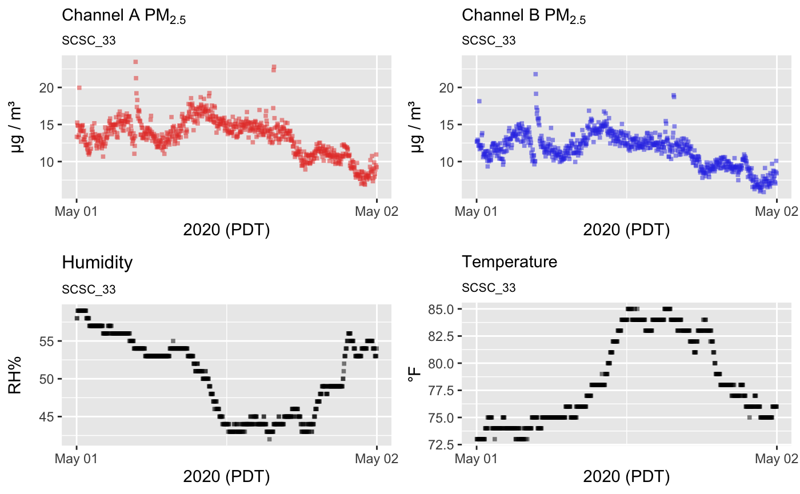
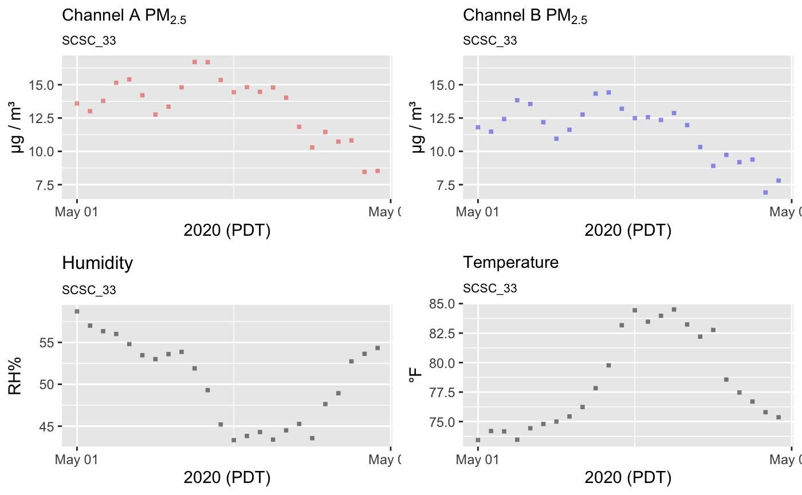

vignettes/articles/Temporal_Aggregation.Rmd
Temporal_Aggregation.RmdAn essential piece of analysis for large data sets is efficient granularization: computing aggregations like sum, mean, sd, min, and max, in which a single number gives insight into the nature of a larger population of measurements. Time series aggregation is the aggregation of all data points over a specified period. Within the AirSensor package, this is achieved with pat_aggregate() which applies an aggregating function, similar to those mentioned above, over a temporal subset of data. By default time series data is broken up into 1-hour periods. The result of the aggregation is a new dataset where each data point reflects a statistical view of the collected and aggregated data points over each hour.
To demonstrate this feature we’ll load a 24-hour period of Purple Air data and compare the data to the aggregated data.
# AirSensor setup
library(AirSensor)
setArchiveBaseUrl("http://data.mazamascience.com/PurpleAir/v1")
# Load the PurpleAir sensor data
pas <- pas_load(archival = TRUE)
pat <-
pat_load(
label = 'SCSC_33',
pas = pas,
startdate = 20200501,
enddate = 20200502
)A standard 24-hour period of non-aggregated data typically consists of 720 data entries – one record every 2 minutes.
## [1] 720In the multi-plot below we can see the high temporal resolution of the raw data.

Using pat_aggregate() we can aggregate the pat object to an hourly average of the data. Hourly reporting is the standard for most regulatory air quality monitoring and is the recommended period to use. It is also the default.
## [1] 24As we’d expect, an hourly aggregated pat contains 24 records, one for each hour. Spikes seen in the raw data contribute to each hourly average but the overall effect is a much smoother time series.

With care, we can extend the use of pat_aggregate() to summarize time series pat data for nearly any period. Sub-hour aggregation may be useful in creating custom QC functions.
You can create different aggregation periods by explicitly providing unit, a string describing the period to split by unit = 'hours', 'minutes', 'weeks', 'months', etc. and count, the number of untis to aggregate in each bin. For example, a 15-minute standard deviation (sd) aggregation would look like this:
# Aggregate the standard deviation of 15-minute periods
sd_fifteen_minute_pat <-
pat_aggregate(pat,
function(x) { sd(x, na.rm = TRUE) },
unit = 'minutes',
count = 15)
# View first 5 entries of data
head(sd_fifteen_minute_pat$data)## # A tibble: 6 x 19
## datetime pm25_A pm25_B temperature humidity pressure pm1_atm_A
## <dttm> <dbl> <dbl> <dbl> <dbl> <dbl> <dbl>
## 1 2020-05-01 07:00:00 2.33 2.13 0 0.488 0.0478 1.11
## 2 2020-05-01 07:15:00 0.727 0.818 0 0 0.0214 0.489
## 3 2020-05-01 07:30:00 0.721 0.270 0.488 0 0.0473 0.679
## 4 2020-05-01 07:45:00 0.816 0.702 0.518 0.354 0.0231 0.655
## 5 2020-05-01 08:00:00 1.17 0.668 0 0 0.0603 0.594
## 6 2020-05-01 08:15:00 0.745 0.521 0.354 0 0.0262 0.476
## # … with 12 more variables: pm25_atm_A <dbl>, pm10_atm_A <dbl>,
## # pm1_atm_B <dbl>, pm25_atm_B <dbl>, pm10_atm_B <dbl>, uptime <dbl>,
## # rssi <dbl>, memory <dbl>, adc0 <dbl>, bsec_iaq <dbl>, datetime_A <dttm>,
## # datetime_B <dttm>In order to write custom aggregation functions for use with pat_aggregate(), we must first familiarize ourselves with pat_aggregate()’s underlying algorithm.
When executed, pat_aggregate(pat, FUN) utilizes the datetime axis of a PurpleAir Timeseries object (pat) to split the data into time-granular bins. For each column of numeric data within pat$data, pat_aggregate() applies FUN to the binned data to produce an hourly (by default) vector of values.
FUN may be assigned to any valid R function! (Caveat: With great power comes great responsibility.) The only requirements for the function are that FUN must operate on univariate numeric data and return a scalar value (think sum, or mean). The last step in pat_aggregate() is to combine the transformed bins along a similarly binned datetime axis and return a data object of the same pat class (pa_timeseries).
The ability to create custom functions for use in aggregation opens the door wide for exploratory data analysis and QC design.